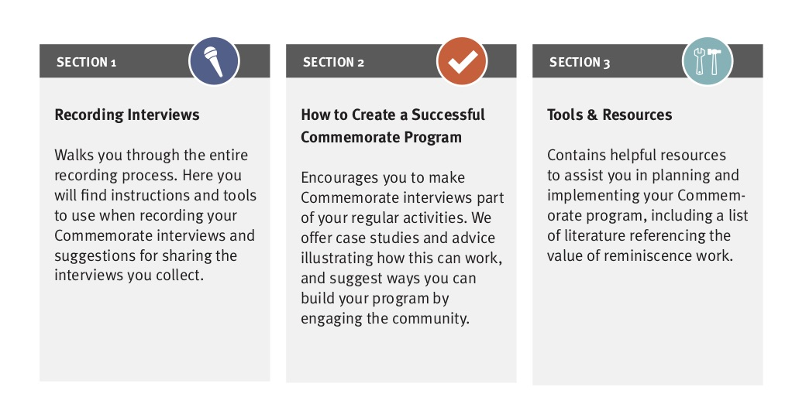
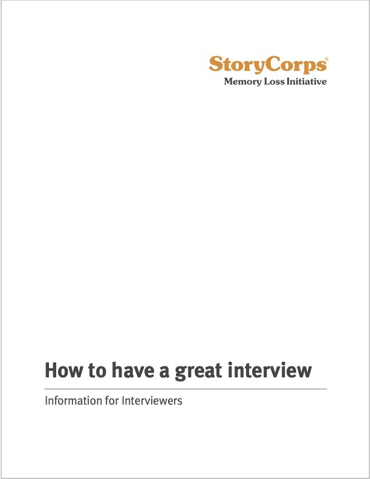
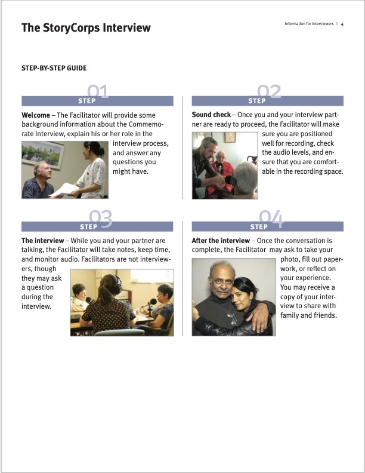

Commemorate
Helping to preserve the stories of those living with memory loss
Brooklyn, NYRole(s):
Project Manager, Interviews, Writing, Content Design, Webinars
The Context
Client:StoryCorps
Objective: Turn an existing service into a DIY model
StoryCorps needed to turn a longstanding program recording the stories of participants with memory loss into a DIY model suitable for use by staff at long-term care facilities. As the lead consultant, I interviewed intended end-users, developed a program model, solicited feedback on its design, planned and launched the pilot.
Research, Design & Piloting
Expert interviews
Focus groups
Content Design
I identified several challenges faced by end-users, and focused the training content on addressing these common problems:
-
lack of suitable recording spaces
-
unfamiliarity with audio equipment
-
difficulty explaining the project to patients and their families
-
getting buy-in from colleagues and facility management
-
connecting the project with other patient activities and company marketing.

|  |  |
|---|
Part of a short explanatory packet for participants
I then led in-person and remote instructional sessions as part of a pilot program to evaluate the design of the program model and the accompanying toolkit.
If I had to do it over again...
These would be at the top of the list:
-
Length:
This toolkit was 63 pages long -
Identifying users:
We chose the users we already had, not necessarily the ones we needed. -
Segmenting users and tailoring information:
Who needs to know what, and when? -
(Re)Defining success:
What’s most important? Absolute fidelity to the StoryCorps model? The audio quality? Or the conversation happening at all? -
Leveraging the brand:
Recording family stories isn’t novel. So why were people drawn to StoryCorps in particular?